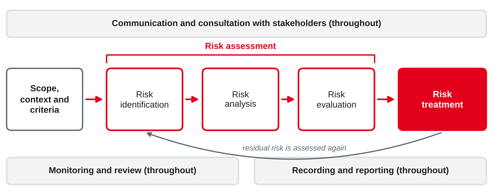
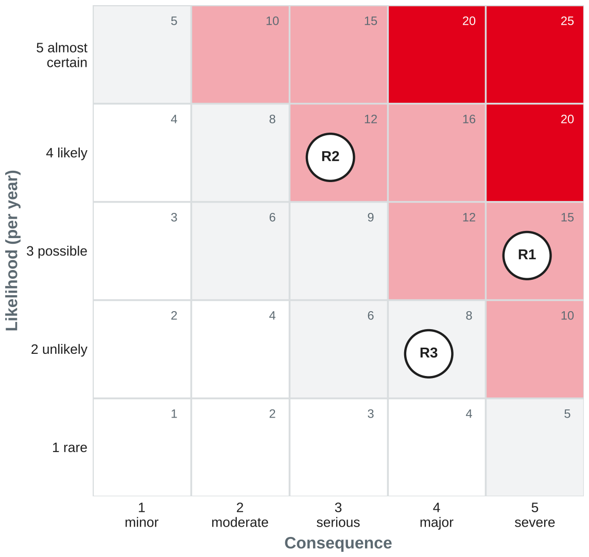

IT Management and EAM
Governance, risk and compliance · GDPR, NIS2, DORA · ISO 31000 risk management process · ethics
DHBW · Digital Business Management (Business IT) · Semester 4
You were asked to find one legal or regulatory rule that affects the IT of your training company.
Three tasks, one integrated view
Governance
Sets direction, decision rights and accountability, e.g. who approves IT risks (session 3).
Risk management
Identifies, assesses and treats uncertain events that affect objectives, e.g. a cyber attack on the ticketing back-end.
Compliance
Makes sure the organisation follows external laws and regulations, contracts and its own internal policies.
GRC is an integrated, organisation-wide approach that aligns strategy, processes, technology and people so that the organisation acts ethically, within its risk appetite and in line with internal policies and external regulations.
Own wording based on Racz et al. (2010).
Compliance of IT
IT for compliance
Sources of requirements: laws and regulations · supervisory rules · contracts and customer requirements · standards the company commits to · internal policies.
Own summary based on Tiemeyer (2023).
| Role | Who | Task | IT example |
|---|---|---|---|
| Governing body | Board, supervisory board | Accountable for oversight; sets risk appetite | Approves the information security strategy |
| First line | Operational management | Owns and manages risks in daily work | Service owner applies patches and reviews access rights |
| Second line | Risk management, compliance, information security officer | Expertise, monitoring and challenge | Compliance team checks whether access reviews take place |
| Third line | Internal audit | Independent assurance to the governing body | Audit of the change process (session 6) |
External assurance (e.g. auditors, supervisory authorities) complements the three lines.
Based on The Institute of Internal Auditors (2020).
GDPR, NIS2 and DORA
| GDPR | NIS2 | DORA | |
|---|---|---|---|
| Legal act | Regulation (EU) 2016/679 | Directive (EU) 2022/2555 | Regulation (EU) 2022/2554 |
| Protects | Personal data and the rights of individuals | Cybersecurity of important services for society and the economy | Digital operational resilience of the financial sector |
| Applies to | Anyone who processes personal data in the EU | Medium and large entities in listed sectors | Financial entities and their critical ICT providers |
| Applies since | 25 May 2018 | 18 Oct 2024 (via national law) | 17 Jan 2025 |
A regulation applies directly in all member states; a directive must first be transposed into national law.
Regulation (EU) 2016/679; Directive (EU) 2022/2555; Regulation (EU) 2022/2554.
| Requirement | Article | IT consequence |
|---|---|---|
| Principles: lawfulness, purpose limitation, data minimisation, storage limitation, integrity and confidentiality, accountability | 5 | Collect only what is needed; delete on schedule; prove compliance |
| Lawful basis, e.g. consent, contract, legal obligation | 6 | Each processing purpose needs a documented basis |
| Data protection by design and by default | 25 | Privacy settings built into systems from the start |
| Records of processing activities | 30 | Inventory of applications that process personal data |
| Security of processing | 32 | Appropriate technical and organisational measures |
| Breach notification to the authority within 72 h | 33 | Incident process must detect and escalate data breaches |
| Data protection impact assessment for high-risk processing | 35 | Assess, e.g., tracking of location or driving behaviour |
Fines: up to €20 million or 4 % of worldwide annual turnover, whichever is higher (Art. 83).
Regulation (EU) 2016/679.
Directive (EU) 2022/2555.
Gesetz zur Umsetzung der NIS-2-Richtlinie (2025).
Who?
Five pillars
Regulation (EU) 2022/2554.
For each organisation, decide whether GDPR, NIS2 (German BSIG) and DORA apply. Justify briefly.
From uncertainty to decisions
Risk is the effect of uncertainty on objectives. It can be negative (a threat) or positive (an opportunity).
What ISO 31000 is
Principles (selection)
Own wording based on ISO (2018).

Own illustration based on ISO (2018).

Risk level = likelihood × consequence
Risk criteria say what is acceptable, e.g. level ≥ 10 must be treated.
Own illustration based on ISO (2018).
| Option | Meaning | Example (R1 ransomware) |
|---|---|---|
| Avoid | Do not start or stop the activity that causes the risk | Not possible: ticketing is core business |
| Reduce | Remove the source, lower the likelihood or the consequence | Offline backups, network segmentation, multi-factor authentication, tested recovery plan |
| Share | Transfer part of the risk to others | Cyber insurance; contractual duties for the device supplier |
| Accept | Retain the risk by an informed decision | Accept the residual risk after treatment, signed by the risk owner |
ISO 31000 also names taking or increasing a risk to pursue an opportunity.
Residual risk is the risk that remains after treatment. It must stay within the risk appetite that the governing body has set.
Own wording and example based on ISO (2018).
The joint mobility app of Rhein-Neckar Mobil Group goes live next year. For each risk, estimate likelihood and consequence (1–5), calculate the risk level and propose a treatment option with one measure.
Legal is not always right
Four ethical issues of the information age (PAPA)
Why it matters for IT managers
Based on Mason (1986) and Racz et al. (2010).
For each: Is it legal? Who benefits, who is harmed? Which PAPA issue is affected? What would make it acceptable?
Own examples; categories based on Mason (1986).
Own summary based on Tiemeyer (2023) and The Institute of Internal Auditors (2020).
Case: Rhein-Neckar Mobil Group (sessions 3–6): 3,200 employees, €410 million turnover. Units: bus services and regional trains on the national rail network, a car-sharing app (120,000 customers), vehicle maintenance. Card payments are processed by an external payment institution.
Findings of an internal review:
Assess the compliance of Rhein-Neckar Mobil Group based on the case and the review findings.
Preparation: which IT service of your training company could it not live without for a single day? What would happen after one hour, one day and one week without it?
Diagrams in this deck are own illustrations. This session is not legal advice.